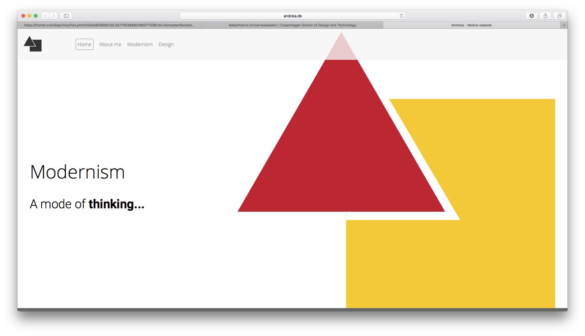
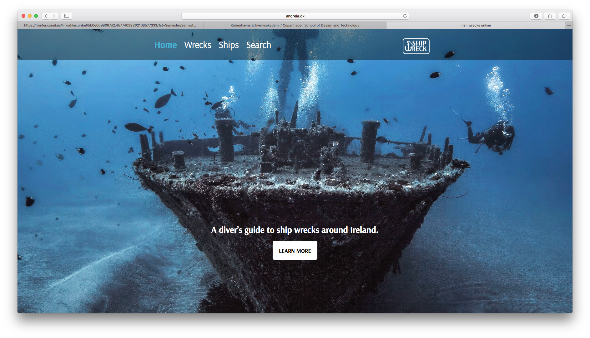

RESPONSIVE WEBSITE

This was my first website assigment on this course. I gain knowledge in the following areas:
Interaction design:
In this area i learned to structure content using HTML5 for the website structure, styling the HTML, and making my web design responsive with grids and media queries using CSS3 creating a simple website and webpages. For that I learned to use a text editor (Brackets) and how to use Cyberduck (FTP) to put my content alive.
Visualisation:
In this area I learned the basics of colours that helped me to choose the right colors for websites; typography, that helped to understand which type of typografy is redable for a user point of view; design principles, that helped me to do better design choices. Also teached me how to transform an idea for a website into an existing one. It is a long process but fun, starting from sketching it, to developing the final digital product, while also documenting the design, working with project files, and exporting to web formats. I also liked working up the skills of editing images, exporting assets, optimising images in Photoshop, using the tools for drawing, colouring, and working with graphics in Illustrator, and prototyping the right things the right ways.
Communication: I learned the basics of how to research and how the basics of a user test.
WEB SITEBASIC REDESIGN
GROUP PROJECT

With this project I learned how to work in group and how to resolve certain conflits when you work in group. I got deeper in the knowledge previously acquired in responsive websites. I also learned how to look to a really old and ugly website and transform it in something modern and clean.
WEB SITE PRESENTATION